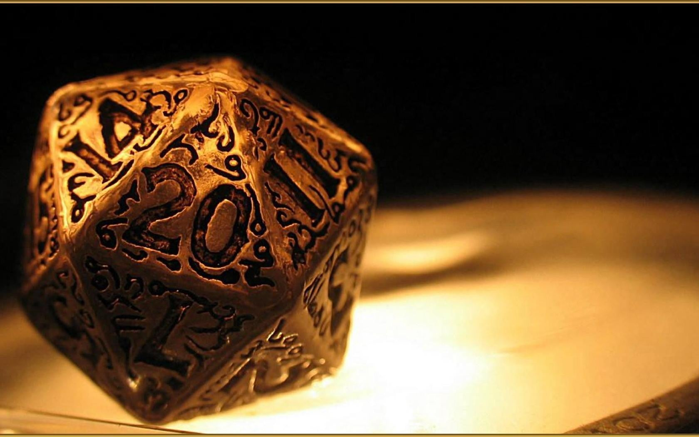
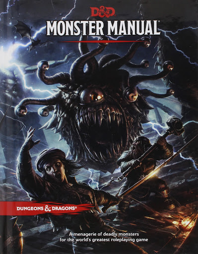
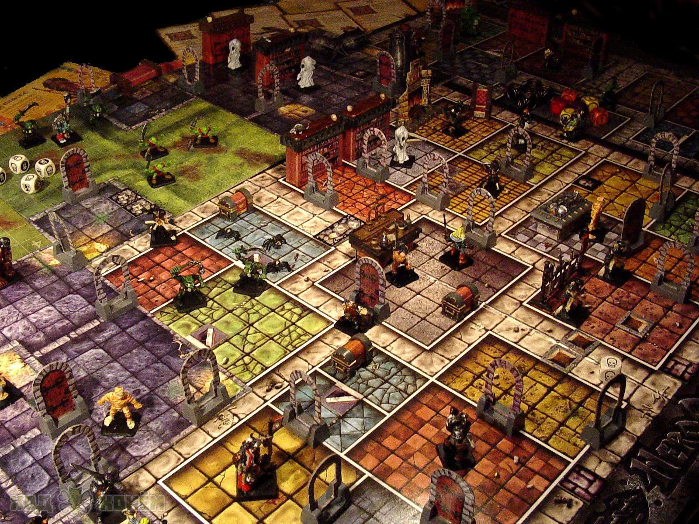
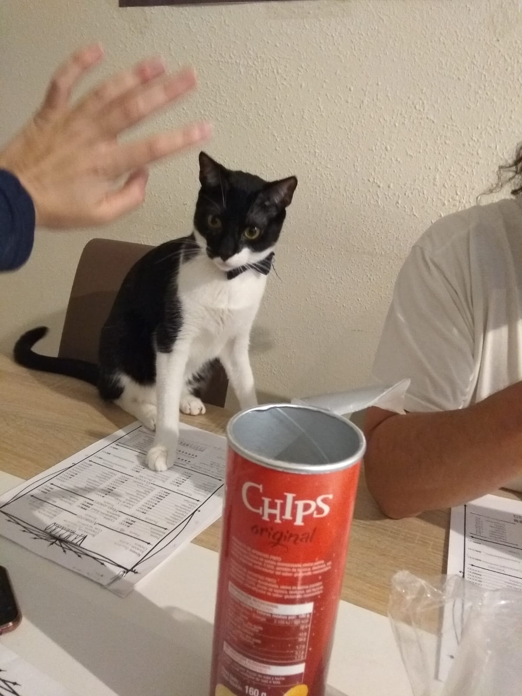

¿Que es Dungeons And Dragons?
Si consultamos la wikipedia la descripcion basica seria: Es un juego de rol de fantasía heroica actualmente publicado por Wizards of the Coast. El juego original fue diseñado en Estados Unidos por Gary Gygax y Dave Arneson y publicado por primera vez en 1974 por la compañía de Gygax, Tactical Studies Rules (TSR). Originalmente derivado de juegos de tablero jugados con lápiz, papel y dados.
actualmente gracias a exitos de television como la serie Strangers Things ha hecho que el concepto de juegos de rol vuelva a estar en auge. Por fortuna esta vez no de malas maneras (aquellos de cierta edad recordaran ciertos eventos acaecidos en la decada de los 90 nefastos para este mundillo que ademas no representan ni por asomo lo que son).
tambien gracias a la nueva y aclamada 5º Ediccion de Dungeons and Dragons el juego arquetipico de rol vuelve a estar de moda. Por ello mis amigos y yo no pudimos evitar empezar una aventura.
Estos son Elementos Que veras en cualquier mesa de rol
   ¿Es peligroso jugar a rol?
Entendiendo por rol como todo aquel juego en el que el jugador representa un papel ajeno al suyo cotidiano, podríamos englobar desde los clásicos juegos de rol -Dungeons and Dragons-, hasta los narrativos o los juegos de tablero temáticos -donde se representa a un general, a un gobernante de un país etc...
De la misma manera de que uno se plantea si comer en demasía o si tomar muchos medicamentos al día es malo, la Sociedad, y en especial los medios de comunicación, llevan mucho tiempo preguntándose si es malo jugar a Juegos de Rol. No es extraño ver como los casos que han derivado en tragedias han creado verdadera alarma entre los ciudadanos, espoleados por televisiones, periódicos y radios, deseosos, por un lado, de hacer leña del árbol caído, y, por otro, de aumentar su audiencia con el escándalo.
De hecho, hasta hace poco, cada vez que se cometía un asesinato extraño, o una incursión en algún cementerio, el portavoz de la policia declaraba sin ambajes que: “seguían la hipótesis de que era una secta satánica o un juego de rol”.
Para la Sociedad tanto da una opción como la otra. No se plantean si ha sido un grupo ultra de un equipo de fútbol, un desequilibrado estresado por la hipoteca, o un grupo de universitarios borrachos que querían comerse el mundo. No, ya que eso cabe dentro de los límites de lo razonable y cotidiano para la Sociedad. No es una gran noticia, que inspira miedo y morbo. Si no hay nada mejor, pues se presenta. Si no, mejor algo más sonado. Acudamos entonces a los raros, a aquellos que se sitúan más allá de las lindes de lo conocido.
¿Jugar a este tipo de juegos conduce a la violencia o la locura? Planteémoslo desde otro punto de vista. El actor que ha hecho de Don Quijote, Don Mendo, Sigfrido y Lanzarote, ¿está loco? Chuck Norris, con su uniforme de Ranger de Texas, ¿incita a la violencia? Quien vea a Anthony Hopkins haciendo de Hannibal Lecter ¿se comerá a su compañero de piso?
Eso no nos lo planteamos, ¿verdad? En un marco de libertad, y ante productos culturales solventes y con una industria cimentada, los valores que puedan transmitir y sus posibles influencias en nosotros, son lo de menos. Claro que de vez en cuando hay alguna critiquilla, pero tampoco hay que extremarse. No estamos en una dictadura, ni hay censura.
La Diosa Dragón Siempre Os Observa Aventurero
MANUALES USADOS
Hay gran variedad de manuales y sobre todo un amplio repertorio en el mundo anglosajon. En este caso nos hemos atrevido a dar uso en lengua inglesa. y vamos a numerarlos


breve resumen de la historia de Voldor
Aunque los Peregrinos partieron hace mucho de este mundo, aún puede encontrarse gente que adora a El Peregrino y que reconoce la divinidad de los propios. Así transcurrieron los siglos, durante los cuales Voldor sufrió cambios significativos debido al desarrollo de los Peregrinos, que consumían los recursos naturales del planeta. Pronto, buena parte de las densas junglas septentrionales al norte de Xerecron habían desaparecido o se habían transformado. Más tarde, las boscosas colinas más allá de Zaselsan, desde las montañas de Kiralizor has- ta la margen norte del gran cañón, quedaron angostadas, mien- tras las llanuras de Shabana, a poniente, se volvieron una infinita meseta desprovista de su otrora salvaje espesura, mientras la so- ciedad de los Peregrinos continuaba horadando la tierra. Con un oscuro fin que nadie alcanzaba a sospechar
Curiosidades de DnD
A continuacion citaremos algunas anecdotas o clasicos de este mundo
Desde primera ediccion de Dungeons and Dragons ha habido una serie de criaturas ya bien conocidas y con cierta fama. Podriamos hablar de los mimicos (criaturas que se disfrazan de cofres por ejemplo) los contempladores ( unas criaturas esfericas enormes con multiples tentaculos en la cabeza y siempre oscuras ideas) y hasta eldemogorgon. Ahora mucho mas famoso gracias a la serie Stranger Things
LA diosa dragon, la implacable sed de sangre encarnada, una dragona con 5 cabezas distintas la cual podria llegar a destruir naciones sin apenas esfuerzo. Y aunque suene tan espeluznante como parece sus inicios fueron mucho mas amables. En la serie de animacion Dragones y mazmorras
fue la primera criatura contra la que los protagonistas se enfrentan y en fin...
deja bastante que desear. suponemos que aun era joven
uno de los mayores atractivos de jugar a rol es que nunca sabes que va a suceder.
Un master puede tener totalmente preparada una partida hasta que algun jugador hace algo tan absurdo, extraño , raro o inesperado que rompe la partida. Dando pie a risas generalmente.
esto aunque para algunos master es algo molesto por fortuna con mis jugadores ha dado pie a situaciones memorables. Como la vez que intentaron proteger la vida de un vulgar goblin por que se llamaba "varicela"
o como cuando dieron un objeto magico a un cerdo que compraron para probarlo y resulto ser un potenciador de inteligencia. Dando pie al inicio de las aventuras de "Sir Bacon".